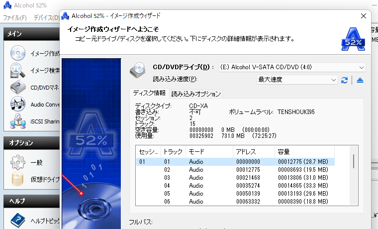
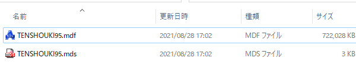
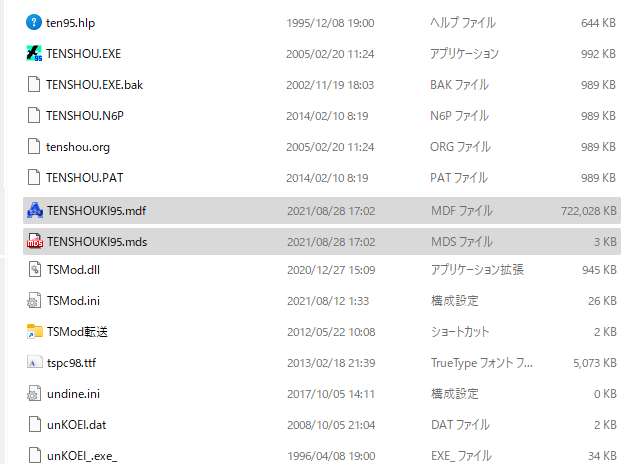
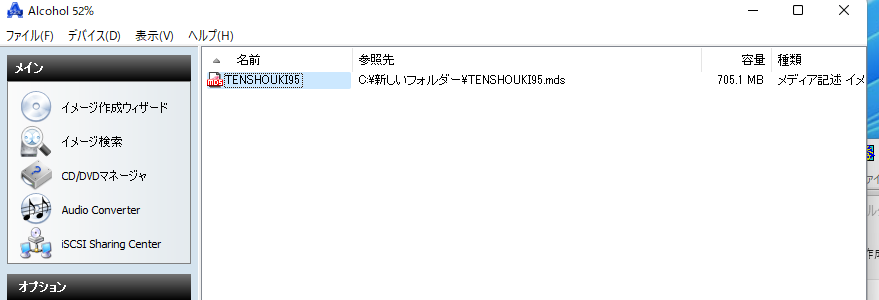
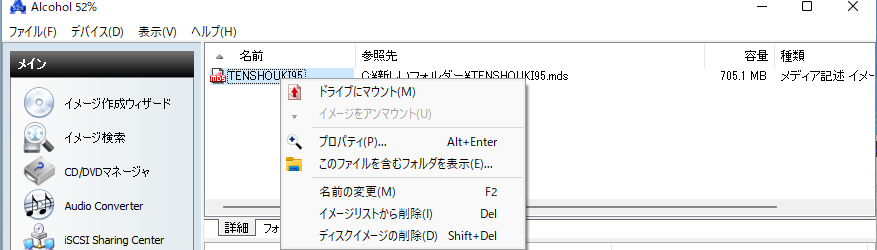
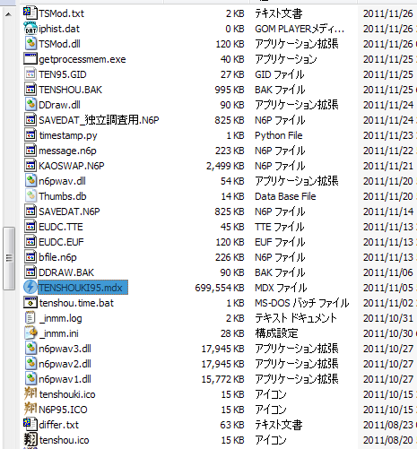
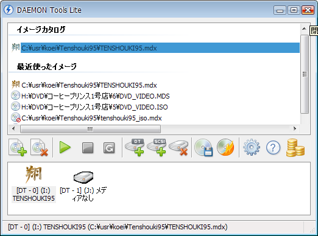

天翔記のCDメディア不要化
「Alcohol 52% Free Edition」もしくは「Daemon Tools Lite」を使うのが主流でしょう。
2021年現在、無料で仮想化ができるのは「Alcohol 52% Free Edition」の方となります。
Alcohol 52% Free Edition 編
Alcohol 52% Free Edition を使って実現します。
Vectorからダウンロードしたものをインストールした後、
すぐに「Alchoholの新しいバージョンが使えます」といった旨のダイアログが表示されますので、
新しいものをインストールしましょう。
これで最新OSでも動作するようになるはずです。
イメージファイルの作成
- 「天翔記95 with PK」のCDをドライブに入れる
- Alchoholを起動
- イメージ作成ウィザードを選択
- ドライブのメニューで「天翔記95 with PK」のドライブを選択
Audioなんとかといったものが13個ほど出てくればそれが天翔記のドライブです。

- 作成できたら、イメージファイルが２つ出来上がります。

- この２つのファイルは好きな位置に移動できます。
天翔記をインストールしたフォルダなどに移動させるのが良いでしょう。

イメージファイルのマウント
- Alchoholを起動
- できあがった２つのイメージファイルのうち、どちらでも良いのでAlchoholのウィンドウへとドラッグ＆ドロップ
（もしくは、Alchoholのメニューより「ファイル」⇒「イメージの追加」で選択。

- 右クリックして、ドライブにマウントを選択

注意点 (重大な不具合)
>インストールした後、エクスプローラーのドライブ（C: D: E:など)を右クリックしてプロパティが表示されるか確認
そこでフリーズしてしまうようであれば、あなたのPCの状態と、Alchoholのシェル拡張との相性が悪いため、
Alchoholは諦めてアンインストールすることをオススメします。
アンインストールの仕方
Alchohol 52%はアンインストールは、アンインストーラーからはできなくなることがあります。
一番最後にインストールした「Alchohol 52%」のインストーラーのファイルを再度実行すると、
Alchohol 52%を再起動した後、「Alchohol 52%をuninstall」する選択肢が現れますので、これでアンインストールしてください。
要するに、「最後にインストールしたものと同等以上のバージョンのものを再度インストール」すると、
再起動などを経て、アンインストールする選択肢が現れるということです。
Daemon Tools Lite 編 (現在この方法は無料では出来ません)
Daemon Tools Lite を使って実現します。
Daemon Tools Lite 以外にもディスクイメージを作成出来るものはありますが、Daemon Tools Lite は最もメジャーなものと言えるでしょう。
Daemon Tools Lite の常駐アイコンを右クリックしてメニューを出し、｢ディスクイメージの作成」にてmdxファイルを作成します。

ドライブとして、｢天翔記のCDが入っているドライブ｣を選択し、 ｢開始｣ボタンを押すと、やがて、650Mほどの******.mdxというファイルが作成されるはずです。
このイメージファイルが、｢天翔記のCDの代わり｣を完全に務めてくれます。
この.mdxファイルは好きな位置に移動できます。
天翔記をインストールしたフォルダなどに移動させるのが良いでしょう。

このイメージファイルをダブルクリックし、マウントさせれば、完成です。
